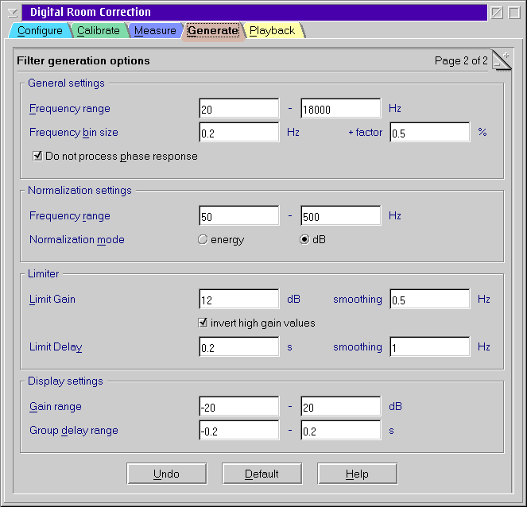

Filter generation options

General settings
- Frequency range
- This is the range of frequencies where a flat room response is
intended. Do not extend the range far beyond the capabilities of
your speakers. Especially speakers with vented enclosures dislike
lower frequencies and may be destroyed this way.
This also controls the X axis of the graphs.
- Frequency bin size
- The resulting filter kernel is an interpolating function rather than
exact values. The next frequency is calculated by adding a constant and
a relative factor to the current frequency.
There is normally no need to change this option.
- Do not process phase response
- This is mainly a work around for insufficiently accurate measurements.
If you turn on this option then the resulting filter will not compensate
for the group delay but only for the frequency response. This results in
a symmetric, linear phase filter. Note that this is a significant
cutback. You will not get the crisp results than from a full
compensation.
Normalization settings
DRC123 must normalize the different measurements to a common level before
combining them. This is done by calculating an average gain and an average
group delay.
- Frequency range
- Range of frequencies that contribute to the normalization.
There is normally no need to change this option.
- Normalization mode
- When normalizing the gain you can chose between quadratic (energy) and
logarithmic (dB) mode.
Normalization by energy results in the same amount of energy
transferred if white noise is passed through the filter. In this mode +3
dB and -3 dB do not cancel since the first causes twice as much energy
while the second causes only half of the energy, in average you are
still at 125%. This mode lowers the gain if the response is changing a
lot. It usually prevents the audio DAC from overdriving.
Normalization by dB causes the total loudness to be kept
approximately. While this sounds useful there are serious drawbacks.
First of all some frequencies have to be amplified by a significant
amount. If your samples have been normalized to 0 dB FSR (full
conduction) it is likely that your sound device overdrive with the
corrected response. Taking back the master volume will not prevent from
that on most sound hardware. Secondly an audible resonance usually
sounds much worse than a frequency notch. So in general normalization by
energy should be preferred unless you have professional studio
equipment.
Limiter
To get reasonable results extreme corrections have to be avoided. First
of all to prevent damage from your speakers but also to avoid audible
artifacts.
- Limit gain
- Maximum positive gain factor for the correction. If your room response
falls below this amount no further compensation takes place. Do not
chose unreasonable high limits to protect your speakers.
Additionally the gain change rate is smoothed by an IIR filter.
- Invert high gain values
- This option cause DRC123 to decrease the gain of frequencies
that need an amplification beyond the gain limit instead of simply
clipping to the maximum value.
The idea is that a speaker should be protected from frequencies that it
cannot reproduce anyway rather that putting more and more energy into it
which might cause damage.
- Limit delay
- Minimum and maximum delay that is compensated by DRC123. This is
mainly to restrict the required length of the resulting filter kernel.
Additionally the change rate of the group delay is restricted by an IIR
filter. Fast changes in the group delay are likely to produce audible
artifacts.
Display settings
- Gain range
- Range of the Y axis of the frequency response graphs.
- Group delay range
- Range of the Y axis of the group delay graphs.